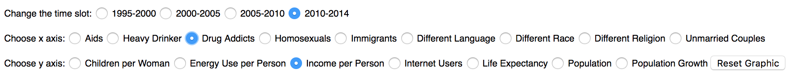
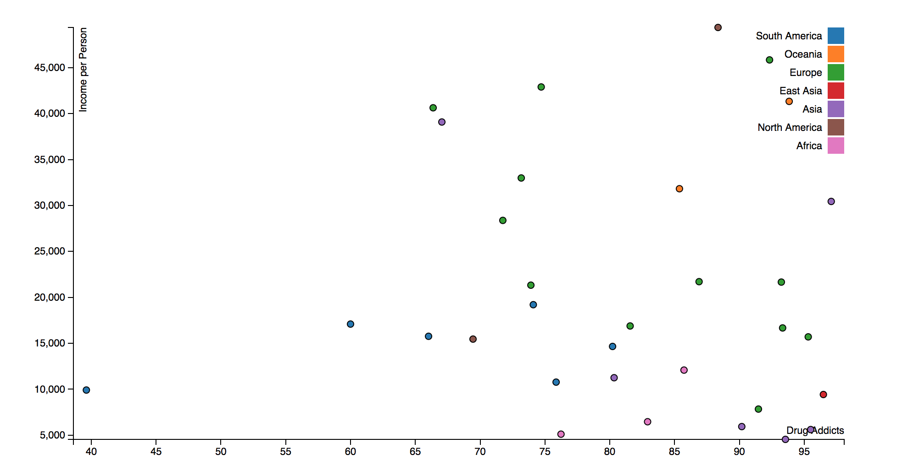
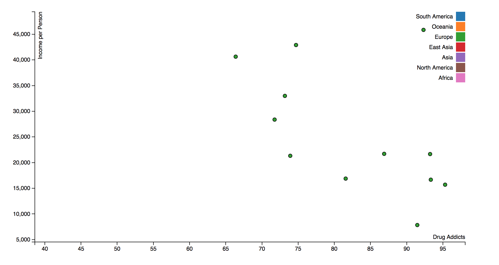

First a basic overview to the project. The subject is making a visualization for World Values Survey and adding more data from Gapminder. My topic is "Would not like to have as neighbors ..." for the first analytic trail and I wonder if there is any relationship between these neighbor preferences and the welfare and the comfort of the country. So, I pick these features from Gapminder:
I try to pick the most appropriate ones from Gapminder(some of them might be indirectly related). So, let's give it a try.
So, let's pick "Drug Addicts" for x axis and "Income per Person" for y axis.
Then, let's check the graph.
Wow, almost all of the points are in the right side and most of them are above the 70%. You can also see the country name and the associated values when you hover the points. But it might be too hard to make any conclusion. Hmm, maybe filtering can help us. Click the one of the continent label in the legend to see only the countries in this continent. Let's pick "Europe" (above the legend, there is a "Reset" button to reset the graphic).
Oww, although all of the results are above the 65%, it looks like there is a negative correlation for Europe and we can also check the other possible combinations from the toolbar to make a conclusion. Also, there is a time slot option in the toolbar, you can check the similar time slots with the analytic trailer 1.